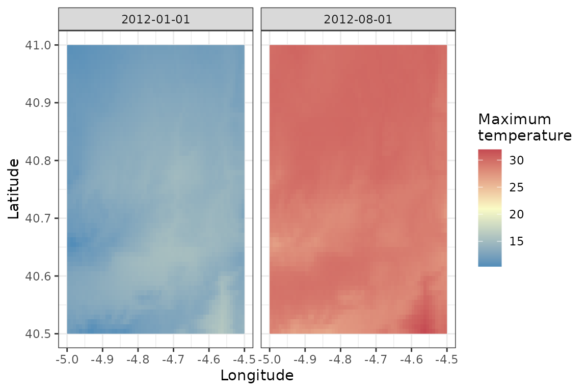
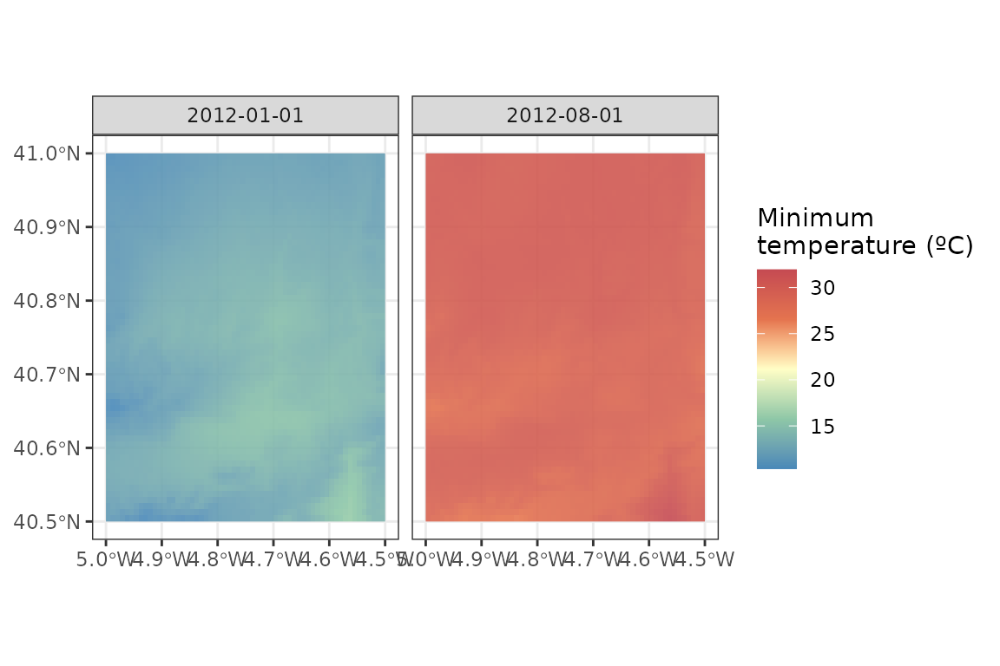

Analysing the climate of an area for a given period
Source:vignettes/polygons-raster.Rmd
polygons-raster.RmdWith easyclimate you can easily download daily climate
data for a given set of points or polygons within Europe. To download
and install the latest version of easyclimate from github
follow the instructions in https://github.com/VeruGHub/easyclimate
In this tutorial we will work through the basics of using
easyclimate with a spatial polygon.
If you wish to download the climatic data of a specific region, you
need to specify at least four corners of the polygon including the area
and specify the type of output you want to obtain (i.e. a data frame -
df or a raster - raster). You can also provide
the polygons of interest in a sf object.
library(easyclimate)
library(terra)
coords_t <- vect("POLYGON ((-4.5 41, -4.5 40.5, -5 40.5, -5 41))")
Sys.time() # to know how much it takes to download
## [1] "2024-11-21 19:11:46 CET"
df_tmax <- get_daily_climate(
coords_t,
period = c("2012-01-01", "2012-08-01"),
climatic_var = "Tmax",
output = "df" # return dataframe
)
Sys.time()
## [1] "2024-11-21 19:12:02 CET"
head(df_tmax)
## ID_coords lon lat date Tmax
## 1 1 -4.995833 40.99583 2012-01-01 10.71
## 2 1 -4.987500 40.99583 2012-01-01 10.65
## 3 1 -4.979167 40.99583 2012-01-01 10.79
## 4 1 -4.970833 40.99583 2012-01-01 10.83
## 5 1 -4.962500 40.99583 2012-01-01 10.87
## 6 1 -4.954167 40.99583 2012-01-01 10.90Then, you can visualize the results and compare both dates
library(ggplot2)
tapply(clim_df$Tmax, clim_df$date, summary)
## $`2012-01-01`
## Min. 1st Qu. Median Mean 3rd Qu. Max.
## 10.35 12.49 13.28 13.23 13.99 16.13
##
## $`2012-08-01`
## Min. 1st Qu. Median Mean 3rd Qu. Max.
## 26.39 28.83 29.49 29.34 29.98 31.94
ggplot() +
geom_raster(data = clim_df,
aes(x = lon, y = lat, fill = Tmax)) +
scale_fill_gradient2(name = "Maximum\ntemperature",
low = "#4B8AB8", mid = "#FAFBC5", high = "#C54A52",
midpoint = 21, ) +
facet_wrap(~date) +
ylab("Latitude") + xlab("Longitude") +
theme_bw()
You can get a (multi-layer) raster directly as output, if you specify
output = raster:
library(tidyterra)
Sys.time()
## [1] "2024-11-21 19:12:04 CET"
ras_tmax <- get_daily_climate(
coords_t,
period = c("2012-01-01", "2012-08-01"),
climatic_var = "Tmax",
output = "raster" # return raster
)
Sys.time()
## [1] "2024-11-21 19:12:22 CET"
ras_tmax
## class : SpatRaster
## dimensions : 60, 60, 2 (nrow, ncol, nlyr)
## resolution : 0.008333333, 0.008333333 (x, y)
## extent : -5, -4.5, 40.5, 41 (xmin, xmax, ymin, ymax)
## coord. ref. : lon/lat WGS 84 (EPSG:4326)
## source(s) : memory
## varname : DownscaledTmax2012_cogeo
## names : 2012-01-01, 2012-08-01
## min values : 10.35, 26.39
## max values : 16.13, 31.94
ggplot() +
geom_spatraster(data = ras_tmax, alpha = 0.9) +
facet_wrap(~lyr, ncol = 2) +
scale_fill_whitebox_c(name = "Minimum\ntemperature (ºC)", palette = "muted") +
theme_bw()
Learn more
Now you know how to extract climatic variables with
easyclimate, for a specific area. Check out this other
vignette if you need to extract the data for specific points.